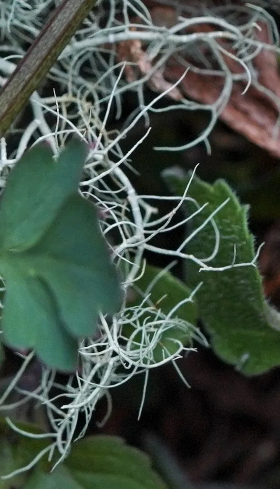

真菌 · 真菌界
松萝 Usnea diffracta

松萝是悬垂生长的枝状地衣，灰绿色、丝状分枝，常成串挂在针叶树枝干上，对空气污染敏感，含松萝酸可入药但不宜食用。
- 分类
- 门子囊菌门纲茶渍纲目茶渍目科梅衣科属松萝属
- 栖息环境
- 针叶林与针阔混交林的枝干上，喜冷凉湿润、空气洁净的环境
- 地理分布
- 中国东北、西南、西北林区及东亚冷凉山地
- 保护级别
- 暂无评估（IUCN 未评估，中国未列入重点保护名录）
物种志
松萝是地衣，由子囊菌与绿藻共生形成。它的地衣体呈枝状，细长如丝，长 10–50 cm，悬垂在树枝上，主轴圆柱形，表面灰绿色至淡黄绿色，有不规则的环状裂痕，分枝细密。折断后可以看到中央有一条白色的弹性中轴，这是松萝属最典型的鉴定特征；子囊盘少见，呈盘状。
松萝多生于针叶林和针阔混交林的枝干上，在冷凉湿润、空气洁净的山区常见，中国东北、西南和西北林区有分布。它靠吸收空气中的水分和养分生活，对二氧化硫等污染物非常敏感，是空气质量的指示地衣；一旦森林被污染或过度采伐，松萝就会消失。松萝含松萝酸，传统上入药，有抗菌、止血之效，但内服过量可中毒，不宜食用。采集时要保护枝干上的地衣群落，不要整枝砍取。
形态与习性
- 分类地衣，由子囊菌与绿藻共生
- 地衣体枝状悬垂，长 10–50 cm
- 颜色灰绿色至淡黄绿色
- 特征折断后中央有白色弹性中轴
- 生境针叶林枝干，喜洁净空气
- 指示作用对二氧化硫敏感，可作空气监测
- 用途含松萝酸可入药，不宜食用
趣味知识
- 松萝折断后中间有一条白色的弹性中轴，是辨认它的关键。
- 它悬垂如丝，常成串挂在针叶树的枝干上。
- 松萝对空气污染很敏感，有松萝的地方通常空气较好。
- 松萝含松萝酸可入药，但内服过量会中毒，不能当野菜吃。